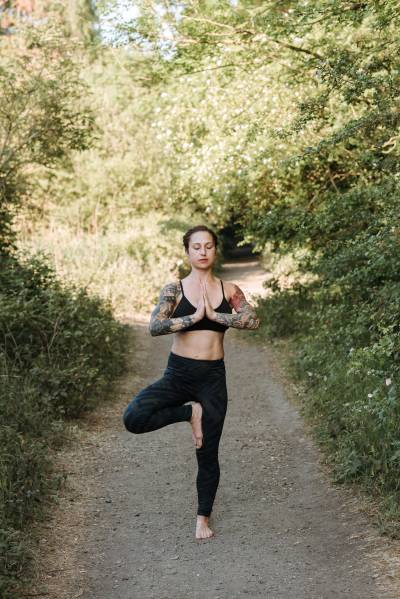

ヴリクシャーサナ（木のポーズ）は、強力な木の枝のように同時に押し下げ、背が高く伸びる感覚を教えます。このポーズでは、立っている足の強さを通じて、地に足がついた感覚を見つけます。反対側の足の裏をすねまたは太ももに置くことで、バランスを挑戦します。足首、脚、コアを継続的に活性化し、バランスを保つために体がどのような小さな動きをするかに気づきます。
脚、お尻、コア、背中を強化することで、木のポーズは姿勢とアライメントを改善し、一日中座っている場合に特に役立ちます。
この立位ポーズは、バランスを改善し、姿勢と体の意識を高めるのに役立ちます。物理的な利益に加えて、このポーズは心を落ち着かせ、リラックスさせ、不安な考えや感情を和らげるのに役立ちます。
ヴリクシャーサナの手順:

- ターダーサナで立ちます。足の指を広げ、足をマットに押し付けて脚の筋肉を引き締めます。前の腰骨を持ち上げて下腹を軽く引き上げます。
- 深く息を吸いながら胸を持ち上げ、息を吐きながら肩甲骨を背中に引き下げます。まっすぐ前方の安定した視点を見つめます。
- 手を腰に置き、右足を左太ももまたはすねに高く上げます。膝に触れないように注意します。
- 右足と左脚を互いに押し付けます。
- 骨盤が水平で前方に正対していることを確認します。
- 安定を感じたら、手を胸の前でアンジャリムドラに置くか、枝が太陽に向かって伸びるように腕を頭上に伸ばします。
- 数回の呼吸を維持し、次に山のポーズに戻り、反対側でも繰り返します。
このビデオガイドを通じて簡単な手順で木のポーズを試すこともできます: